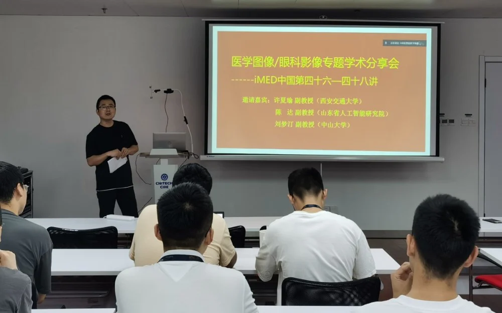
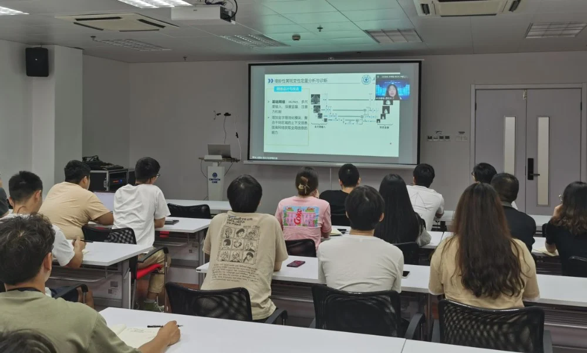
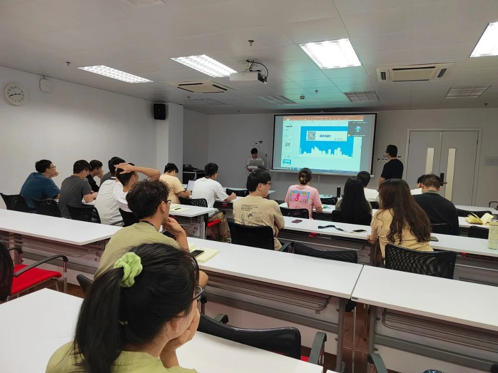
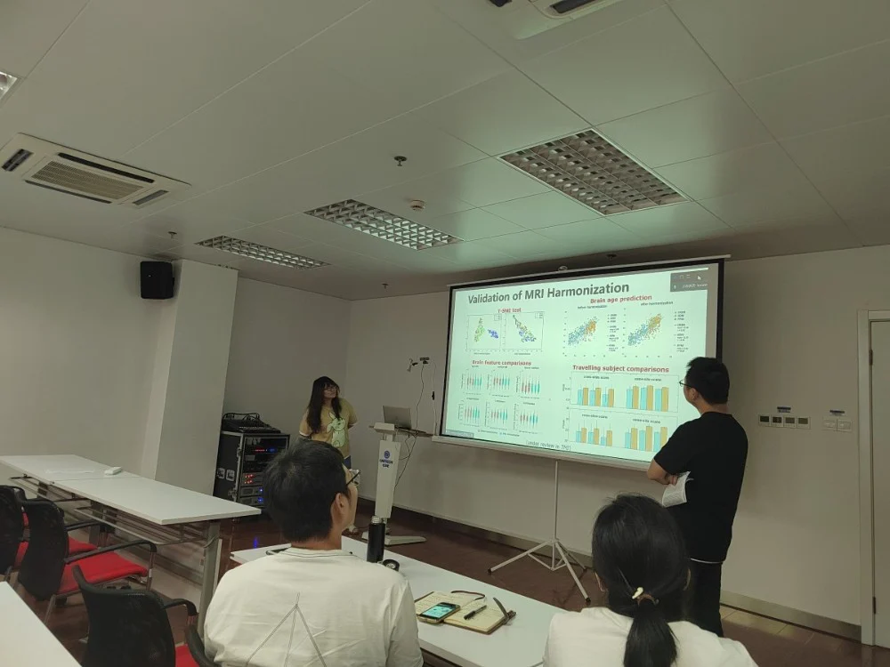

医学图像/眼科影像专题学术分享会
——iMED中国第四十六——四十八讲
邀请嘉宾：
许夏瑜 副教授 西安交通大学 生命科学学院 OCT/OCTA研究
陈 达 副教授 山东省人工智能研究院 应用数学分析模型研究
刘梦汀 副教授 中山大学 生物医学工程学院 神经科学研究

2022年7月8日，iMED团队邀请到了国内医学图像分析领域的三位重量级嘉宾进行了一场干货满满的学术分享会。他们分别是：许夏瑜副教授，陈达副教授，刘梦汀副教授。分享会由iMED宁波的张炯老师主持。

许夏瑜副教授来自西安交通大学生命科学学院，从事OCT/OCTA图像相关的研究。陈达副教授来自山东省人工智能研究院，从事应用数学模型分割相关的工作。刘梦汀副教授来自中山大学生物医学工程学院，从事脑(神经)科学相关领域的研究。
在三个小时的分享中，他们深入浅出地分享了关于增龄性黄斑变性定量分析与诊断、糖尿病视网膜病变的分割、OCTA图像上的视网膜动静脉分割、早产儿大脑MRI分析等的研究成果。
许夏瑜教授详细叙述了她们在黄斑病变分析、糖网病变分割和OCTA视网膜动静脉分割课题上遇到的难题以及分析问题的方式，展开讲了对网络的设计与改进手段、病变级数据扩增的手段，并介绍了损失函数的设计方法。她提到：“损失函数是我们与网络沟通的最直接的方式，我们可以将我们的意图告诉网络”。
陈达教授专注于应用数学研究。在会上，利用方法驱动型思路，他逐步解释了如何构造能量函数、搜索使能量函数最小的边界曲线的意义。最后讲解了测地线模型在图像分割中的应用。

刘梦汀教授做了题为《机器学习在探索生命各阶段神经科学问题中的应用》的分享。分享中，他分别对早产儿大脑表面重构技术细节、脑MRI分割的多种应用做了详尽的分析。还介绍了他在关于社会压力对成人大脑认知过程的影响的研究、关于生物恐惧和社会恐惧的关系的研究中的研究方法和取得的科研成果。最后，刘教授针对基于大规模影像分析的阿兹海默症个性化早期诊断中的影像协同化问题提出了解决方案。

在每段分享结束后的互动环节，针对分享PPT中提到的细节，同学们就存疑的地方向老师现场提问。白艳苗同学就许夏瑜教授关于糖网病变分割的相关研究提出了几个问题：文中提到的病变级数据增强方法，是仅对微小病变有效还是其他病变均有效；用何种指标来评价多种病灶等。郝华颖同学就刘梦汀教授关于多域MRI图像风格迁移的研究课题进行了提问，刘教授利用PPT中的实验数据做了详实的解答。
通过这次学术分享会，同学们学习到了医学图像处理领域的诸多先进知识。本次学习为同学们的科研解决了很多知识上的问题，也为以后的科研工作扩宽了研究思路。十分感谢老师们精心准备的分享以及他们对学生提问的耐心解答。